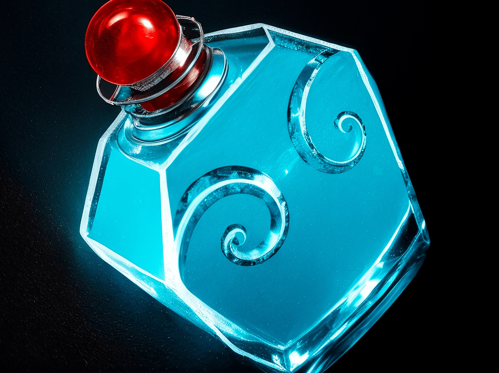

Mask of Madness
NEW
Активируемая: Berserk.
Даёт владельцу 110 скорости атаки и 30 скорости передвижения, но уменьшает его броню на 8 и запрещает ему применять способности. Действует 6 сек.
Доп. скорость атаки: 110
Доп. скорость передвижения: 30
Снижение брони: 8
Длительность: 6
Пассивная: Lifesteal.
Наделяет атаки владельца вампиризмом, отчего они восстанавливают здоровье в размере доли от нанесённого урона. Вампиризм от крипов слабее на 40%.
Вампиризм: 24%
Вампиризм от крипов: 14,4%
+20 к урону
+24 к вампиризму

Mask of Madness
NEW
Активируемая: Regenerate.
Тратит один заряд, чтобы постепенно восстановить цели 110 здоровья и 60 маны за 2,7 сек. Восстановление прекращается при получении урона от вражеских героев или Рошана.
Заряды можно восполнить возле союзного фонтана.
Зажмите Ctrl, чтобы применить на союзника.
Дальность применения: 350
Всего восстанавливает здоровья: 110
Всего восстанавливает маны: 60
Длительность: 2,7
Количество зарядов: 3
Таймер пополнения заряда: 1
Пассивная: Store Rune.
В бутыль можно поместить одну руну, чтобы воспользоваться ей позже. Помещённая в бутыль руна задействуется сама спустя 90 секунд.
Руны полностью наполняют бутыль.
Дальность применения: 100
Макс. длительность хранения руны: 90